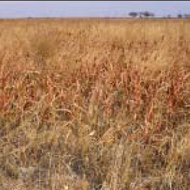

|
Fire Behavior Fuel Model GR7 (107) -- High Load, Dry Climate Grass (Dynamic) |
Scott and Burgan (2005) classify Fire Behavior Fuel Model GR7 (107) in the Grass Fuel Type and describe it as follows:
The primary carrier of fire in GR7 is continuous dry-climate grass. Load and depth are greater than GR4. Grass is about 3 feet (0.9 meters) tall.
Fuel model parameters are available by viewing the Fuel Model Table of Parameters or right-clicking on the fuel model description in the Input Guide window and selecting View parameters.
Scott and Burgan's (2005) photographs on page 32 are examples of fuels fitting this model.
 |
Scott and Burgan (2005) Photo 1, Fire Behavior Fuel Model 107. |
|  | Scott and Burgan (2005) Photo 2, Fire Behavior Fuel Model 107. |